| 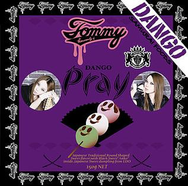 |
Artist : Tommy heavenly6 Song: pray Genre: rock |
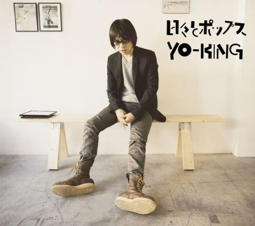 |
Artist: YO-KING Song: Tooi Nioi Genre: rock |
| 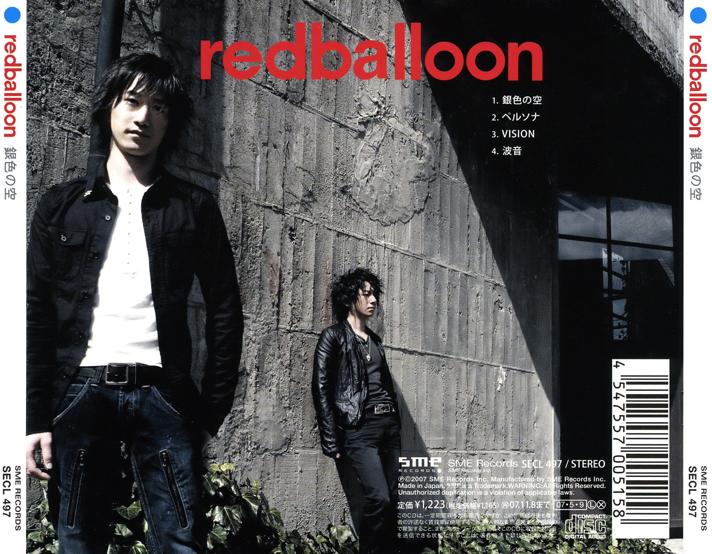 |
Artist: redballoon Song: Giniro no Sora Genre: rock Gintama fandom |
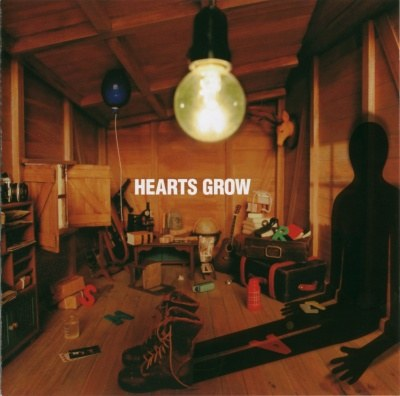 |
artist: hearths grow Song: kasanaru kage Genre: rock |
| 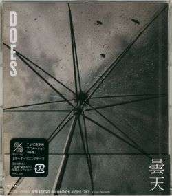 |
Artist : Does Song : donten Genre: rock Site officiel |
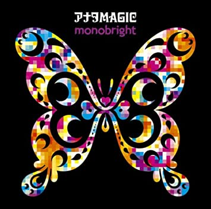 |
Artist : monobright Song: Anata magic Genre: rock |
| 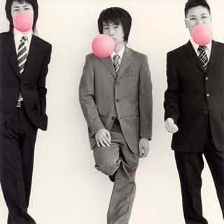 |
Ending 1
|
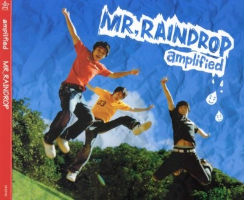 |
artist : Amplified Song : Mr.raindrop Genre: rock Fansite |
| 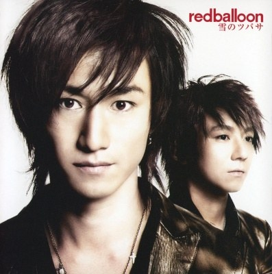 |
Artist: redballoon Song : Yoki no tsubasa Genre: rock Fansite |
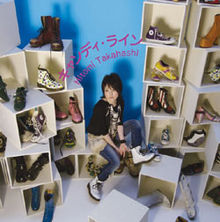 |
Artist: Takahashi Hitomi Song: Candy Line Genre: rock |
| 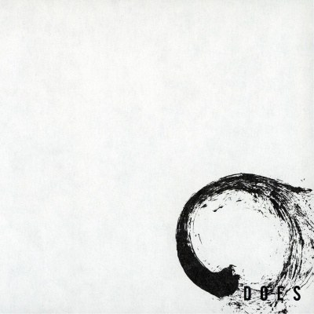 |
Artist: DOES Song: Shura Genre: rock Site officiel |
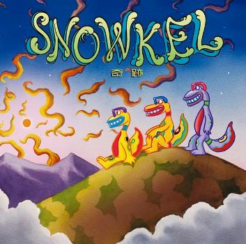 |
Artist: Snowkel Song: Kiseki Genre: rock |